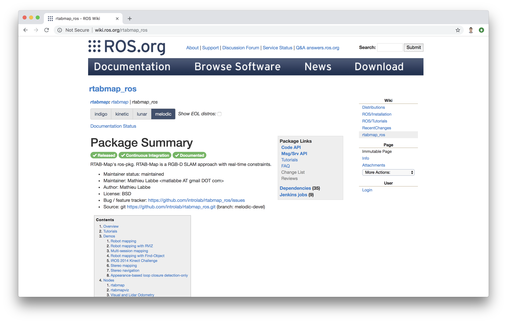
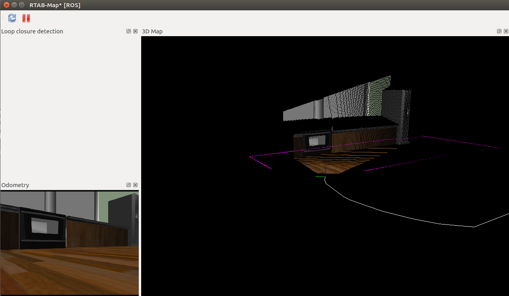
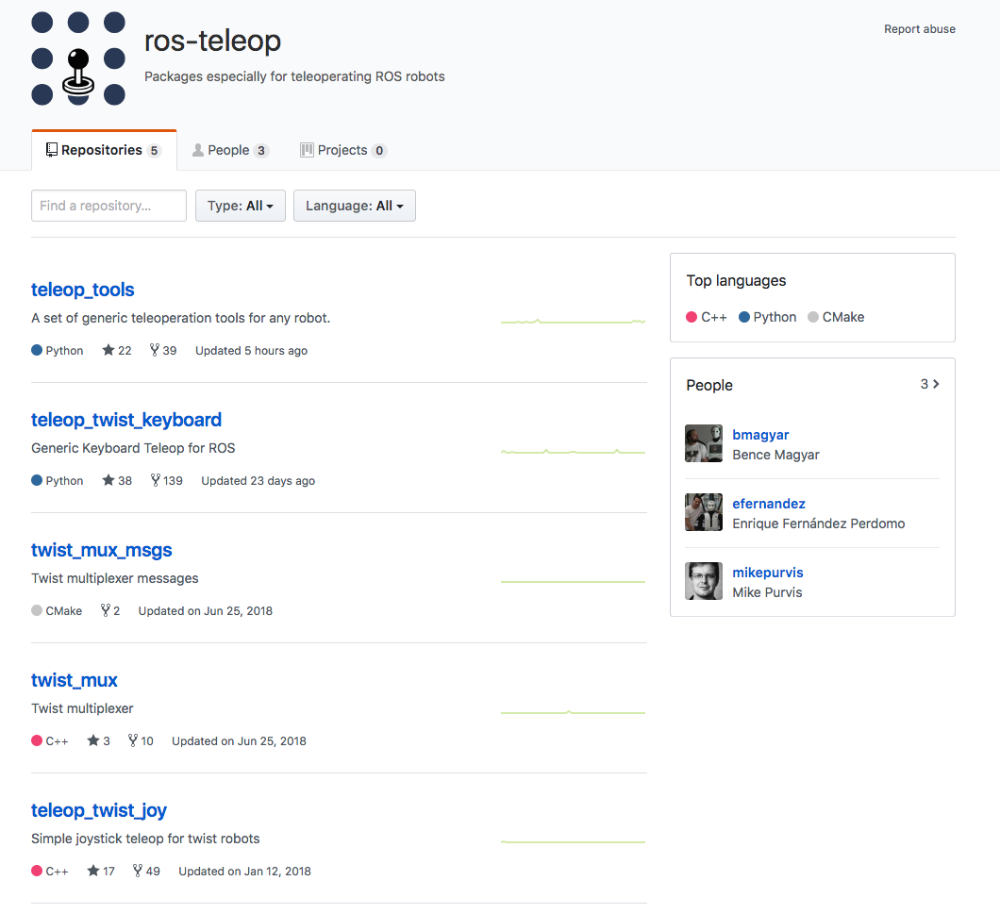
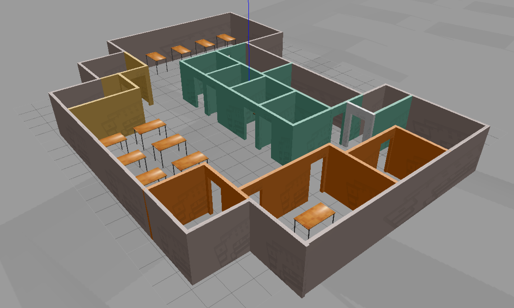
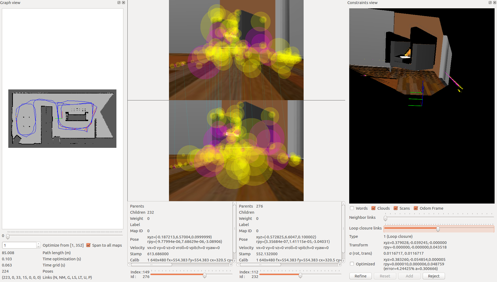

Overview
Welcome to Project 3: Map My World! In this project you will create a 2D occupancy grid and 3D octomap from a simulated environment using your own robot with the RTAB-Map package.
RTAB-Map (Real-Time Appearance-Based Mapping) is a popular solution for SLAM to develop robots that can map environments in 3D. RTAB-Map has good speed and memory management, and it provides custom developed tools for information analysis. Most importantly, the quality of the documentation on ROS Wiki (http://wiki.ros.org/rtabmap_ros) is very high. Being able to leverage RTAB-Map with your own robots will lead to a solid foundation for mapping and localization well beyond this Nanodegree program.
For this project we will be using the rtabmap_ros package, which is a ROS wrapper (API) for interacting with RTAB-Map. Keep this in mind when looking at the relative documentation.
Project Instructions
Udacity provides you with a in-classroom Workspace with ROS configured to work on the project. If you need a refresher, check out the Workspace tutorials.
The project flow will be as follows:
-
You will develop your own package to interface with the
rtabmap_rospackage. -
You will build upon your localization project to make the necessary changes to interface the robot with RTAB-Map. An example of this is the addition of an RGB-D camera.
-
You will ensure that all files are in the appropriate places, all links are properly connected, naming is properly setup and topics are correctly mapped. Furthermore you will need to generate the appropriate launch files to launch the robot and map its surrounding environment.
-
When your robot is launched you will
teleoparound the room to generate a proper map of the environment.
We are excited to see you grow with your ROS skills and we can't wait to see what your map looks like!
Simulation Setup
Similar to the last project, let us setup the simulation environment and the robot in Project 4 Workspace for our next tasks.
Navigate to Workspace by clicking the Project Workspace on the side bar. You might want to open it in a new window. You could use either the terminal in Classroom without GPU mode or the VNC Desktop with GPU mode to do the setup.
Setup your catkin_ws folder as well as the src folder, then we need to grab the code from last project. Again, you could do that in two ways.
Method 1: git
If you have pushed your submission for the localization project to GitHub, go ahead and create a new repository then duplicate your code from last project to it.
git clone --bare https://github.com/exampleuser/old-repository.git cd old-repository.git git push --mirror https://github.com/exampleuser/new-repository.git cd .. rm -rf old-repository.git
Source: https://help.github.com/articles/duplicating-a-repository/
Method 2: Folder Upload
If you want to upload the package folder to the Project 4 Workspace, go to the project Workspace and click the + button, then select Upload Folder to upload your package folder!
Verify Your Simulation Setup
Do a quick catkin_make and source the devel/setup.bash script. Launch the world to verify if the system is good to go!
roslaunch <YOUR PACKAGE NAME> world.launch
RTAB-Map Pacakge
Although ROS provides you with huge amount of packages, integrating a ROS package requires your understanding of the package itself and how it connects to your project. The best place to start is on the RTAB-Map ROS Wiki page.

According to the documentation, the recommended robot configuration requires:
- A 2D Laser, providing
sensor_msgs/LaserScanmessages - Odometry sensors, providing
nav_msgs/Odometrymessages - 3D Camera, compatible with
openni_launch,openni2_launchorfreenect_launchROS packages
It seems that we lack the 3D camera sensor!
Sensor Upgrade
In the previous projects you have been using an RGB camera; now it's time to give your robot an upgrade. Specifically, we will use a simulated Kinect camera for RTAB-Map.
Add optical camera link
For RGB-D camera in URDF file, we need to add an extra link and an extra joint to the camera link in order to align the camera image in Gazebo properly with the robot. Note that the parent link of camera_optical_joint should be properly configured to the original camera link.
Add the following joint and link to the robot's .xacro file:
<joint name="camera_optical_joint" type="fixed"> <origin xyz="0 0 0" rpy="-1.5707 0 -1.5707"/> <parent link="camera_link"/> <child link="camera_link_optical"/> </joint> <link name="camera_link_optical"> </link>
Configuring the RGB-D Camera
To do this we will need to replace the existing camera and its shared object file: libgazebo_ros_camera.so to that of the Kinect shared object file: libgazebo_ros_openni_kinect.so. Also, update the <frameName> to be the camera_link_optical link you created just now.
On top of this, additional parameters need to be set for the RGB-D camera as well as matching the topics published by the drivers of its real world counterpart. We have provided an example for the camera code below. Substitute that in your robot's .gazebo file!
Note: You could use the Classroom Workspace editor instead of the VNC Desktop to edit the gazebo file.
A snippet of camera code is provided below:
<!-- RGBD Camera --> <gazebo reference="camera_link"> <sensor type="depth" name="camera1"> <always_on>1</always_on> <update_rate>20.0</update_rate> <visualize>true</visualize> <camera> <horizontal_fov>1.047</horizontal_fov> <image> <width>640</width> <height>480</height> <format>R8G8B8</format> </image> <depth_camera> </depth_camera> <clip> <near>0.1</near> <far>20</far> </clip> </camera> <plugin name="camera_controller" filename="libgazebo_ros_openni_kinect.so"> <alwaysOn>true</alwaysOn> <updateRate>10.0</updateRate> <cameraName>camera</cameraName> <frameName>camera_link_optical</frameName> <imageTopicName>rgb/image_raw</imageTopicName> <depthImageTopicName>depth/image_raw</depthImageTopicName> <pointCloudTopicName>depth/points</pointCloudTopicName> <cameraInfoTopicName>rgb/camera_info</cameraInfoTopicName> <depthImageCameraInfoTopicName>depth/camera_info</depthImageCameraInfoTopicName> <pointCloudCutoff>0.4</pointCloudCutoff> <hackBaseline>0.07</hackBaseline> <distortionK1>0.0</distortionK1> <distortionK2>0.0</distortionK2> <distortionK3>0.0</distortionK3> <distortionT1>0.0</distortionT1> <distortionT2>0.0</distortionT2> <CxPrime>0.0</CxPrime> <Cx>0.0</Cx> <Cy>0.0</Cy> <focalLength>0.0</focalLength> </plugin> </sensor> </gazebo>
Launch File
We have the launch file to launch Gazebo and Rviz. Now, similar to what we did to create the amcl.launch in last project, we need to add the launch file for RTAB-Map!
mapping.launch
Our mapping launch file acts as the main node that interfaces with all the required parts to be able to perform SLAM with RTAB-Map. A labeled template for the mapping.launch file has been provided below. Create mapping.launch file in the launch folder.
Read through the code and the comments to understand what each part is accomplishing and why. Feel free to reach beyond this template with the documentation of RTAB-Map. You task here is to assign the correct topic to be remapped to the topics required by rtabmap.
scanrgb/imagedepth/imagergb/camera_info
You should find the actual topics that your robot is publishing to, in the robot's urdf file. When you find the correct ones, substitute them in the <arg> tags at the beginning of this launch file. Then your mapping node could find all required information to perform RTAB-Mapping!
<?xml version="1.0" encoding="UTF-8"?> <launch> <!-- Arguments for launch file with defaults provided --> <arg name="database_path" default="rtabmap.db"/> <arg name="rgb_topic" default="/camera/rgb/image_raw"/> <arg name="depth_topic" default="/camera/depth/image_raw"/> <arg name="camera_info_topic" default="/camera/rgb/camera_info"/> <!-- Mapping Node --> <group ns="rtabmap"> <node name="rtabmap" pkg="rtabmap_ros" type="rtabmap" output="screen" args="--delete_db_on_start"> <!-- Basic RTAB-Map Parameters --> <param name="database_path" type="string" value="$(arg database_path)"/> <param name="frame_id" type="string" value="base_footprint"/> <param name="odom_frame_id" type="string" value="odom"/> <param name="subscribe_depth" type="bool" value="true"/> <param name="subscribe_scan" type="bool" value="true"/> <!-- RTAB-Map Inputs --> <remap from="scan" to="/scan"/> <remap from="rgb/image" to="$(arg rgb_topic)"/> <remap from="depth/image" to="$(arg depth_topic)"/> <remap from="rgb/camera_info" to="$(arg camera_info_topic)"/> <!-- RTAB-Map Output --> <remap from="grid_map" to="/map"/> <!-- Rate (Hz) at which new nodes are added to map --> <param name="Rtabmap/DetectionRate" type="string" value="1"/> <!-- 2D SLAM --> <param name="Reg/Force3DoF" type="string" value="true"/> <!-- Loop Closure Detection --> <!-- 0=SURF 1=SIFT 2=ORB 3=FAST/FREAK 4=FAST/BRIEF 5=GFTT/FREAK 6=GFTT/BRIEF 7=BRISK 8=GFTT/ORB 9=KAZE --> <param name="Kp/DetectorStrategy" type="string" value="0"/> <!-- Maximum visual words per image (bag-of-words) --> <param name="Kp/MaxFeatures" type="string" value="400"/> <!-- Used to extract more or less SURF features --> <param name="SURF/HessianThreshold" type="string" value="100"/> <!-- Loop Closure Constraint --> <!-- 0=Visual, 1=ICP (1 requires scan)--> <param name="Reg/Strategy" type="string" value="0"/> <!-- Minimum visual inliers to accept loop closure --> <param name="Vis/MinInliers" type="string" value="15"/> <!-- Set to false to avoid saving data when robot is not moving --> <param name="Mem/NotLinkedNodesKept" type="string" value="false"/> </node> </group> </launch>
Further Resources:
Real Time Visulization
Another tool that you can use is rtabmapviz, which is an additional node for real time visualization of feature mapping, loop closures, and more. It’s not recommended to use this tool while mapping in simulation due to the computing overhead. rtabmapviz is great to deploy on a real robot during live mapping to ensure that you are getting the necessary features to complete loop closures.

If you would like to enable it for mapping, add this code snippet to the mapping.launch file. This will launch the rtabmapviz GUI and provide you with realtime feature detection, loop closures, and other relevant information to the mapping process.
<!-- visualization with rtabmapviz --> <node pkg="rtabmap_ros" type="rtabmapviz" name="rtabmapviz" args="-d $(find rtabmap_ros)/launch/config/rgbd_gui.ini" output="screen"> <param name="subscribe_depth" type="bool" value="true"/> <param name="subscribe_scan" type="bool" value="true"/> <param name="frame_id" type="string" value="base_footprint"/> <remap from="rgb/image" to="$(arg rgb_topic)"/> <remap from="depth/image" to="$(arg depth_topic)"/> <remap from="rgb/camera_info" to="$(arg camera_info_topic)"/> <remap from="scan" to="/scan"/> </node>
ROS Teleop Package
You have used teleop node to control your robot by keyboard strokes in previous labs and projects. Here, we also need it so that we could navigate the robot in the environment and perform RTAB-Mapping.
Clone the teleop package to your Workspace src folder and complile! You could find the code here: https://github.com/ros-teleop/teleop_twist_keyboard

Map My World!
We have everything ready to go. Launch the ROS nodes and let us start mapping.

First, launch the Gazebo world and RViz, spawn the robot in the environment:
roslaunch <YOUR PACKAGE NAME> world.launch
Then, launch the teleop node:
rosrun teleop_twist_keyboard teleop_twist_keyboard.py
Finally, launch your mapping node:
roslaunch <YOUR PACKAGE NAME> mapping.launch
Navigate your robot in the simulation to create map for the environment! When you are all set, terminal the node and you could find your map db file in the place you specified in the launch file. If you did not modify the argument, it will be located in the /root/.ros/ folder.
Best Practices
You could start by lower velocity. Our goal is to create a great map with the least amount of passes as possible. Getting 3 loop closures will be sufficient for mapping the entire environment. You can maximize your loop closures by going over similar paths two or three times. This allows for the maximization of feature detection, facilitating faster loop closures! When you are done mapping, be sure to copy or move your database before moving on to map a new environment. Remember, relaunching the mapping node deletes any database in place on launch start up!
Database Analysis
The rtabmap-databaseViewer is a great tool for exploring your database when you are done generating it. It is isolated from ROS and allows for complete analysis of your mapping session.
This is how you will check for loop closures, generate 3D maps for viewing, extract images, check feature mapping rich zones, and much more!

Let’s start by opening our mapping database:
We can do this like so: rtabmap-databaseViewer ~/.ros/rtabmap.db
Once open, we will need to add some windows to get a better view of the relevant information, so:
- Say yes to using the database parameters
- View -> Constraint View
- View -> Graph View
Those options are enough to start, as there are many features built into the database viewer!
Let’s talk about what you are seeing in the above image. On the left, you have your 2D grid map in all of its updated iterations and the path of your robot. In the middle you have different images from the mapping process. Here you can scrub through images to see all of the features from your detection algorithm. These features are in yellow. Then, what is the pink, you may ask? The pink indicates where two images have features in common and this information is being used to create neighboring links and loop closures! Finally, on the right you can see the constraint view. This is where you can identify where and how the neighboring links and loop closures were created.

You can see the number of loop closures in the bottom left. The codes stand for the following: Neighbor, Neighbor Merged, Global Loop closure, Local loop closure by space, Local loop closure by time, User loop closure, and Prior link.
When it comes time to design your own environment, this tool can be a good resource for checking if the environment is feature-rich enough to make global loop closures. A good environment has many features that can be associated in order to achieve loop closures.
Optional: RTAB-Map Localization
If you desire to perform localization using the map you created, there are only a few changes you need to make. You can start by duplicating your mapping.launch file and renaming the duplicated file tolocalization.launch.
The following changes also need to be made to the localization.launch file:
-
Remove the
args="--delete_db_on_start"from your node launcher since you will need your database to localize too. -
Remove the
Mem/NotLinkedNodesKeptparameter -
Add the
Mem/IncrementalMemoryparameter of typestringand set it tofalseto finalize the changes needed to put the robot into localization mode.
This is another method for localization you can keep in mind when working on your next robotics project!
Project Submission
Once you have completed your project, use the Project Rubric to review the project. If you have covered all of the points in the rubric, then you are ready to submit! If you see room for improvement in any category in which you do not meet specifications, keep working!